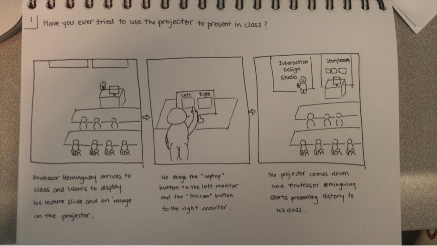
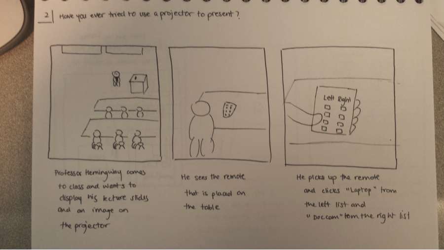
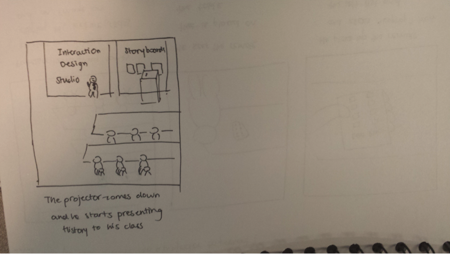
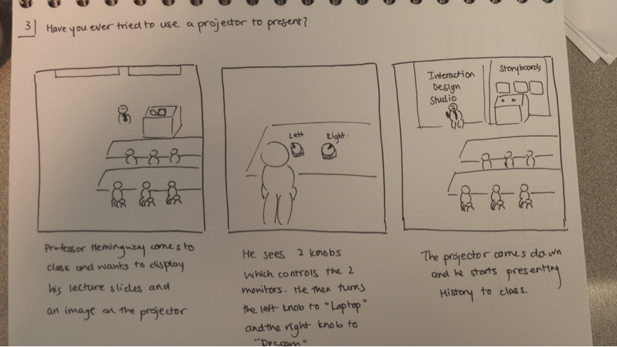
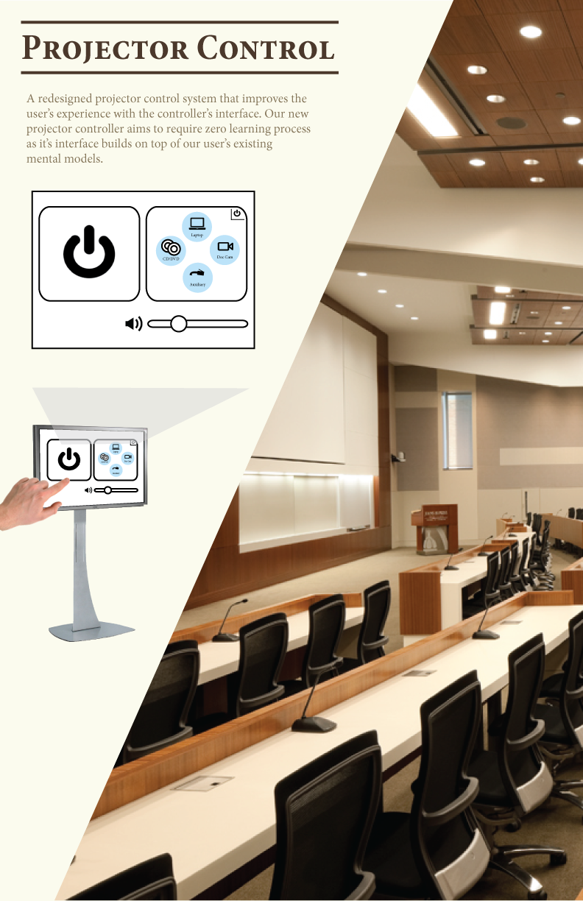
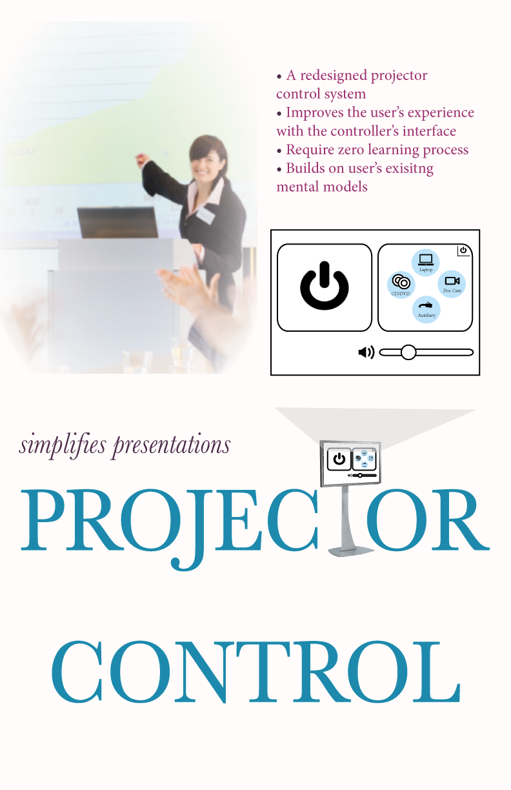
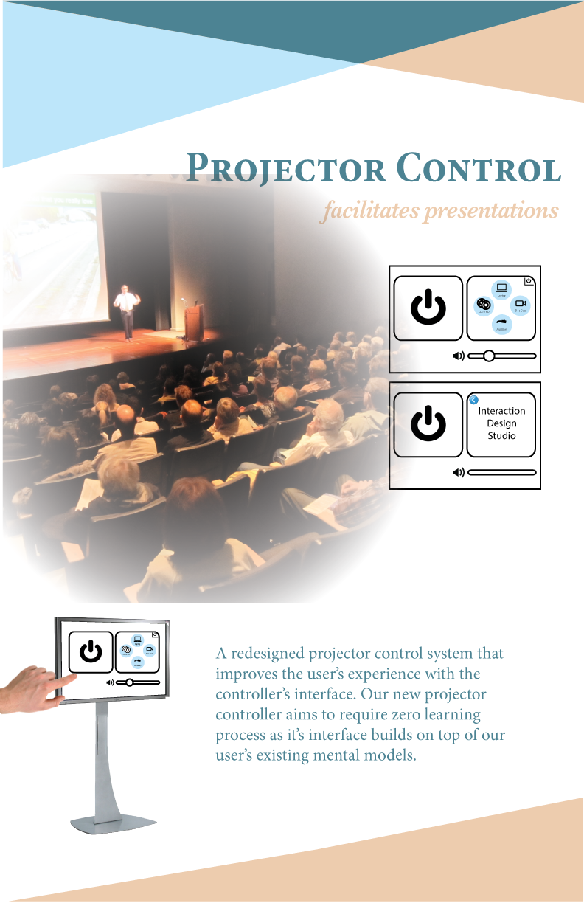

Project Description
In my Interaction Design Studio, one of our assignments was to find a real world control that can be improved and redesign the control, demonstrating the enhanced interactive experience of the product. Our final deliverable had to include a poster designed for the control.Problem
The projector control system at Carnegie Mellon University, which connects laptops, CDs, document camera, etc. to the projector is extremely confusing and difficult to use. Many times, during lectures or presentations, both students and professors struggle with using the system and waste a lot of time on trying to figure it out. I propose Project-It, a new projector control system with a better improved interface.Audience
Persona
Tim, 60, grew up in a small town in Tennessee. Tim graduated from Tennessee State University at the age of 22 and has been a high school history professor in Tennessee since then. Tim does not like change therefore he has lived in Tennessee most of his life. Tim still has a flip phone since he finds new technology difficult to use. He also does not want to spend the time to learn to use a smartphone. He considers himself intelligent, but after going to a subpar college, he finds that many people in academia look down on him.
Tim’s current salary as a high school professor is decent but he does not have any savings left since he spent it on supporting his family. Wanting to help his son, Tim started looking for a new job and found one at Tennessee State University as an introductory history professor. Tim tried his old teaching habits, which consists mainly of writing on the chalkboard and passing out handouts. After the mid-semester review, Tim has received complaints about not having structured lecture slides to review and not showing enough documentaries in class. The department requested that he use some of the previous professor’s lecture slides.
Faced with change, Tim needs to become accustomed with the new teaching system. This is a big challenge for Tim since he has been teaching high school students for over 30 years. His history classes required that he prepare slides for the presentation. He also needs to look up CDs of documentary from the library to show his students
Scenario
In class, Tim tries to connect his laptop to the projector, but the projector fails to display his laptop screen. He tried clicking on several icons on the screen, including the “Left Monitor” icon, the “Right Monitor” icon, and the “Laptop” icon. He also tried to drag the “Laptop” icon onto the “Left Monitor” icon but it failed. After trying to figure it out for 5 minutes, Tim called a student to help him set it up. Disturbed by his inability to use the projector controller, Tim is worried that he will have to waste time next class again to set up the projector and that less of his students will show up to his lecture. He wants a system that is easier to use.
Initial Storyboards
These storyboards present 3 different ideas of solving the problem.1. 
2. 

3. 
Final Storyboard

Initial Poster Designs



Final Poster Design